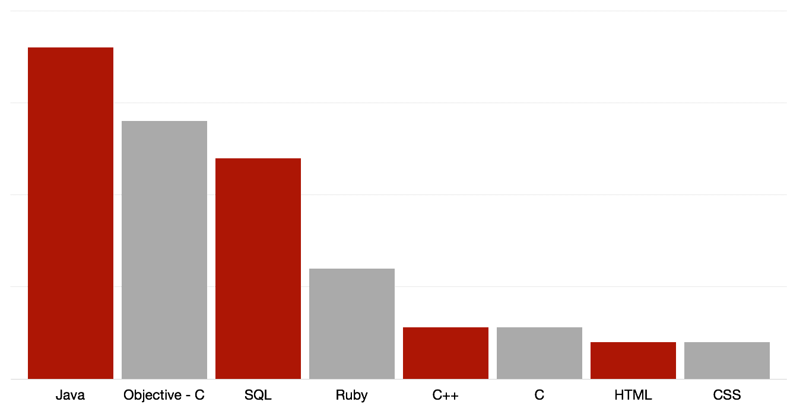

Hello, I'm Matthew Faluotico. A Software Developer.
I was born in Kingston, New York, in 1993 however quickly move to Stow, Ohio. I'm a Computer Science and Engineering student at The Ohio State University. I'm currently experimenting with iOS development, with a few working projects available on GitHub.
In the summer of 2013, I began an internship at Etactics Inc., a clearinghouse in Stow, Ohio. I was responsible for generating customer friendly graphs and reports using Java and SQL. A second intern and I developed a system to alert management when customer activity drops below average.
My current focus is Objective-C and web development. I'm in the process of developing multiple iOS applications and with the help of the Collegiate Web Developers Group at The Ohio State Univserirt and Twitter Bootstrap, I'm learning Ruby on Rails, HTML, and CSS.
Language Experience.

What I've Been Working On.
WalkitOut
Pedometer for the iPhone 5S. The M7 Motion chip stores footstep data. This app turns footstep data into miles and calories results.
Languages: Objective-C
DPICalculator
iPhone ppi calculator. User inputs display information and the pixels-per-inch of the dispaly is returned.
Languages: Objective-C
Personal Website
Personal Website with projects, resume, and external links. Built using Twitter Bootsrap as a gateway into learning html, css, and javascript.
Languages: html, css
Alfred Workflows
A collection of workflows for Alfred app 2.0 for Mac OS X.
Languages: Applescript, Bash
Words by Occurrence
Counting the words in a document and returning them in a sorted order while maintaing a runtime of O(n).
Languages: Objective-C
CMStepCounter Wrapper
A wrapper for the iOS Cocoa Core Motion Step Counter framework. Simplifies methods for novice users.
Languages: Objective -C